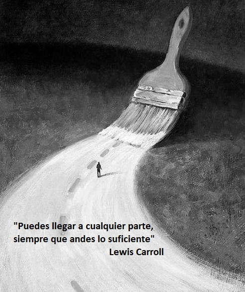
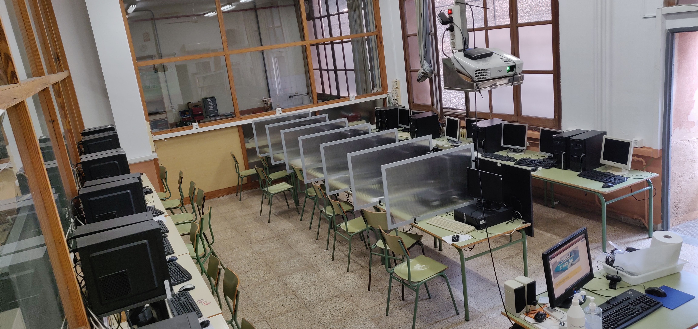
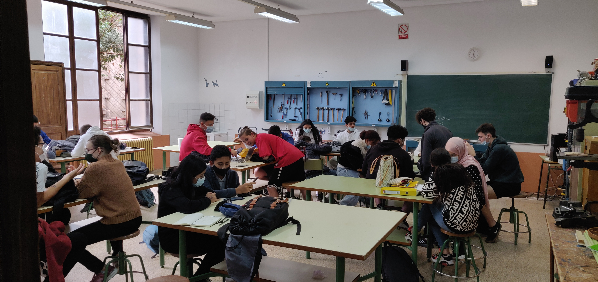

Robòtica
Lego i electrònica
Quant a disseny gràfic:
Entre molts de projectes, treballam amb:
- Arduino
- Lego NXT
On es formen els millors informàtics i enginyers!
Benvingut al web del departament de tecnologia de l'IES Ramon Llull. Aquí trobaràs tota la informació del nostre departament. També podràs saber en quins projectes estam treballant.
Quant a disseny gràfic:
Entre molts de projectes, treballam amb:
Feim audiovisuals:
També dissenyam videojocs amb
i una Impressora 3d!
Cream programes utilitzant distints llenguatges de programació
Cream programes utilitzant distints llenguatges de programació
i una Impressora 3d!
Es tracta d'una matèria optativa que es pot cursar tant a primer com a segon de batxillerat.
Es tracta d'una matèria optativa que es pot cursar tant a primer com a segon de d'ESO.
Es tracta d'una matèria optativa que es pot cursar tant a primer com a segon de batxillerat.
Es tracta d'una matèria troncal que es cursa tant a segon com a tercer de d'ESO.
Aula amb noves torres de NOX i netway, una aula de molt bona qualitat. Aquesta aula està preparada per l'estudi del conjunt de totes les eines i programes que tracten, administren, transmeten i comparteixen la informació mitjançant suports tecnològics.
Aula especialitzada per planificar i dissenyar processos de manufactura i equip que és un aspecte principal de la tecnologia industrial.

Aula especialitzada per el treball amb fusta i el seu estudi en la tecnologia.
